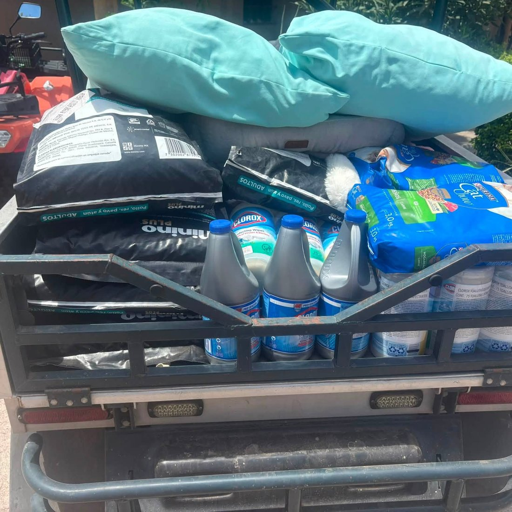
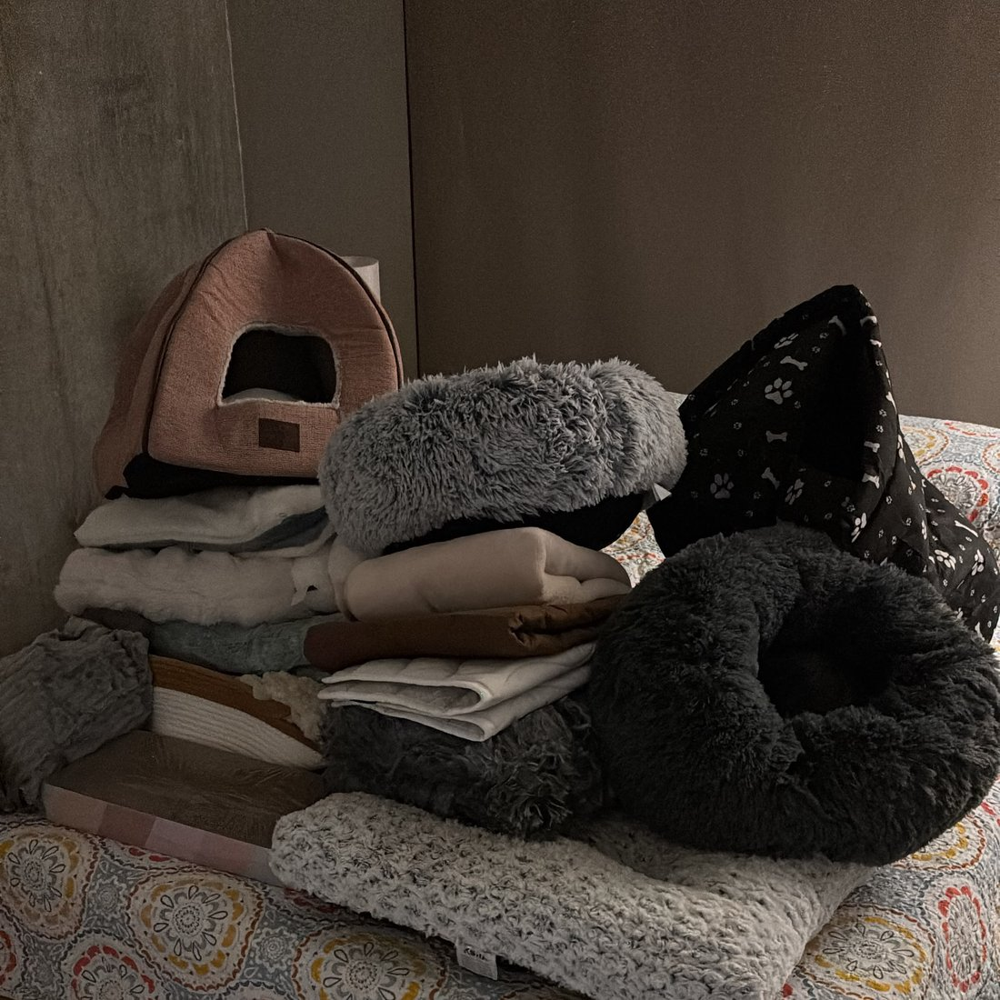
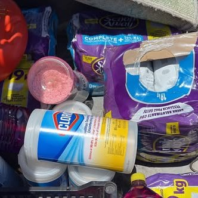
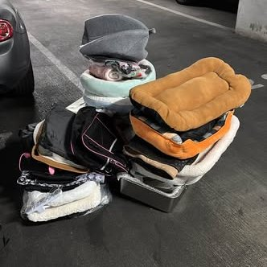
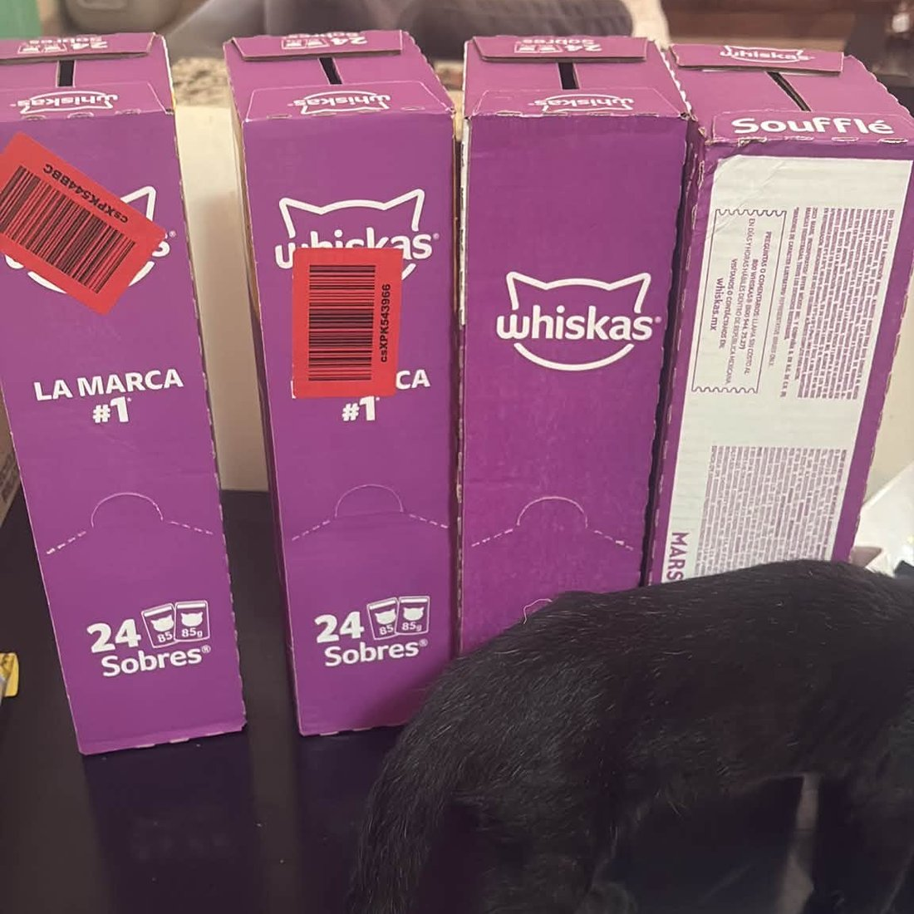

Providing rescue, care, and a safe home for the cats of Loreto, Baja California Sur — and working toward a permanent future.
Soft Paws Cat Sanctuary is a volunteer-run rescue organization in Loreto, Baja California Sur, dedicated to providing humane care for cats in need. Founded by passionate animal lovers, Soft Paws operates a cattery where rescued cats receive food, medical attention, and socialization while awaiting adoption.
The sanctuary runs on a shoestring budget, relying on donations and the tireless work of its volunteers. Every contribution — no matter the size — directly improves the lives of the cats in their care. Our 2026 fundraising goal is $45,000 — help us get there.
Since we began supporting Soft Paws, Friends of Loreto, BCS has delivered a new Speed Queen light commercial washing machine to the sanctuary, funded several hundred dollars in in-kind supplies — beds, carriers, blankets, and playpens — and helped facilitate the adoption of 3 kittens into homes in the United States, the first of many to come.



Soft Paws previously relied on hand-washing to clean bedding, towels, and linens for the dozens of cats in their care. Thanks to donor support, Friends of Loreto, BCS purchased and delivered a new Speed Queen light commercial washing machine to the sanctuary, dramatically reducing labor time and improving sanitation standards.
This upgrade is already helping sustain safe, healthy conditions as the rescue grows.
Formalizing Soft Paws as a legally recognized non-profit in Mexico (asociación civil) unlocks local institutional support, municipal grants, and long-term sustainability. This project covered the accounting, legal, and filing fees required to complete the registration process.
Friends of Loreto, BCS provided a grant of $2,800 to cover the accounting fees for this process, and Soft Paws is now officially registered as a Mexican non-profit (asociación civil) — a major milestone that makes it a permanent, credible institution in Loreto.
Day-to-day operations at Soft Paws depend on a reliable stockpile of essentials: quality cat food, litter, flea/tick preventatives, wound-care supplies, and enrichment toys.
This campaign builds a three-to-six-month reserve buffer so the sanctuary can focus on rescue and adoption rather than crisis fundraising. So far, Friends of Loreto, BCS has provided $5,000 in cash grants plus several hundred dollars in in-kind supplies — beds, carriers, blankets, and playpens — directly to Soft Paws. Donations at any level make a direct, immediate difference in the lives of the cats in care.


Not a U.S. taxpayer?
You can still support Soft Paws directly on their website: softpawsloreto.org ↗